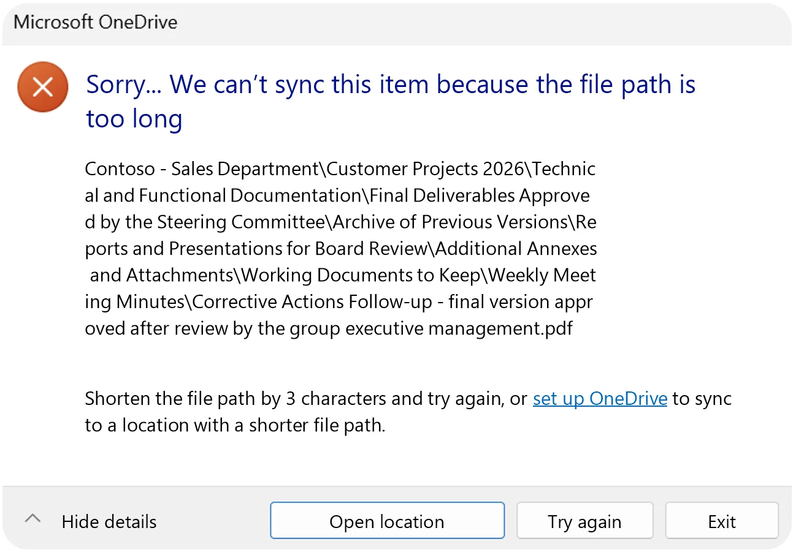
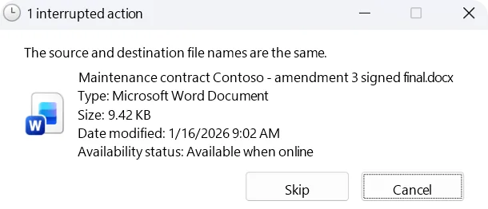

Understanding the problem
Windows limits the length of a file's "path", meaning its name plus all the folders that contain it. When that length gets too long, two thresholds cause problems:
| Limit | Consequence | Learn more |
|---|---|---|
| > 255 characters | ⚠️ Warning: the file syncs, but Windows cannot open it from File Explorer. It remains accessible online (OneDrive or Teams). | Understand the error |
| > 400 characters | 🔴 Critical: OneDrive cannot sync the file. | Understand the error |
Path > 400 characters: OneDrive displays a sync error and shows the number of excess characters. The file cannot be synced and OneDrive stays stuck on this error until the path length is corrected.

Path > 255 characters: the file syncs, but cannot be opened directly from the OneDrive folder. It remains accessible online or via Teams. OneDrive does not indicate the path length, making diagnosis difficult without a dedicated tool.

Windows does not always display path lengths.
Without a tool, you have to copy each path into a text editor to count the characters: an unrealistic task with thousands of files.
OneDrive Path Checker runs this diagnosis in seconds, before errors appear.
OneDrive and SharePoint limit the entire path of a file, name included, to 400 characters. Windows adds its own limit of 255 characters ("MAX_PATH": 260 in total) for opening files from File Explorer.
Learn more: OneDrive path length limit: 255 and 400 characters explained.
Using the tool
The tool scans a OneDrive folder synced on your computer. It measures the full Windows path length of each file, from the drive root. For example:
C:\Users\julie\OneDrive - My Company\Projects\2024\Important document.docxBeyond 255 characters, the file is flagged as a warning; beyond 400, it is flagged as critical. A path of exactly 255 characters is accepted.
The tool is designed to scan professional-scale folders:
| Volume | Performance |
|---|---|
| Up to 50,000 files | Fast and smooth |
| 50,000 to 100,000 files | Functional, a few seconds wait |
| Beyond 100,000 files | Possible slowdown depending on machine |
For each file, a "⋯" menu lets you rename it, open its folder or delete it (with confirmation).
The rename window opens on the longest element of the path and shows the new length live against the limits. Three buttons quickly clean up spaces, punctuation and dashes.
Files you fix stay in the list, in green, and are counted in the "Fixed" category so you can follow your progress live.
Two formats are available: CSV (readable in Excel) and PDF (a report ready to print or share, with the compliance score). Both use the same columns as the application:
- Total length
- Excess over 255 characters
- Excess over 400 characters
- Folder levels
- File name and path
Rows are sorted from the longest path to the shortest. Only files that still need fixing are listed.
To be transparent, here is what you should know:
- Files over 400 characters are not synced by OneDrive: they may be missing from your computer, and therefore from the scan.
- Fix tracking lasts for the session: a new scan resets it.
- Renaming a folder also changes the path of the files it contains: run a new scan to update the list.
Security and privacy
Yes. The tool runs entirely locally on your workstation. No file contents are read and no data (file names, paths, results) is sent to an external server. The scan does not require an internet connection.
No. No administrator rights are required. The application runs in the context of the logged-in user and accesses files with their standard rights.
The scan is read-only. The tool only changes a file when you ask it to: a rename that you confirm, or a file deletion with confirmation. It never deletes a folder.
About the developer